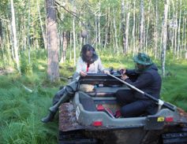

Research
-
1.Fire in boreal forests of western Siberia
Although based on short-term datasets, Eurasian forest fire regime is categorised as low to medium in severity, there is significant variability within this region, likely due to different vegetation composition. However, a comprehensive understanding of how exactly vegetation composition and properties determine fire regimes is still lacking. In this project I will develop an inter-disciplinary approach focusing on understanding how interactions between fire regime and plant traits control the distribution of Eurasian boreal forests. It will combine new fossil records of fire, vegetation and climate derived charcoal morphologies, pollen, dung fungi, stable isotopes and testate amoebae from Siberian parts of boreal Eurasia with information on fire-related functional traits of key boreal tree species and statistical approaches.
2. Fire in Central and Eastern Europe
The aim of this project is twofold, one is to understand fire regime dynamics under a range of past environmental conditions and anthropogenic land use schemes throughout new, high-resolution macro-charcoal records from temperate coniferous mountain forests, boreal forests and temperate grasslands from Central and Eastern Europe (CEE). The other is to provide the research community with a critical synthesis of charcoal records spanning CEE, a "white spot" in terms of the spatial coverage and high-resolution charcoal records. These charcoal records are evaluated in combination with pollen-based land cover classes, climate simulations and novel statistical modeling to explore the relative importance of land cover and dominant functional forest type and climate dynamics on biomass burned over the past 12 ka years.
3. Land cover reconstruction in South Eastern Europe
In this project we will first obtain estimates of pollen productivities (PPEs) and fall speeds of major plant taxa from modern landscapes in lowlands covered by forest steppe vegetation from SE Romania. We will we apply these PPE to long-term records in order to reconstruct natural vegetation as well as to explore the magnitude of landscape alteration across cultural phases and land use changes.
4. Reconstruction of past hydro-climate variability and carbon accumulation
In this project we used a combination the stable isotopes (δ13C δ15N), testate amoebae and plant macrofossils to reconstruct past climate variability and carbon accumulation in various peatlands from central and eastern Europe and western Siberia.
5. Others
I am exploring different aspects of ecosystems functioning such as biodiversity, stability, resilience, regime shifts in vegetation and fire regime, vegetation compositional turnover to mention a few.


Here you find some of my recent topics and projects